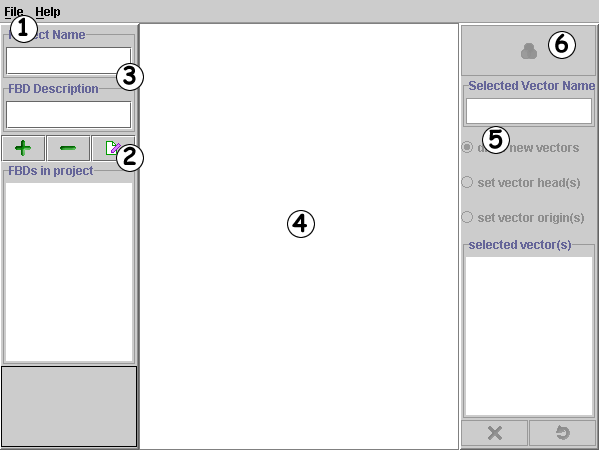
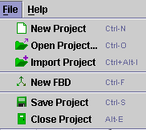
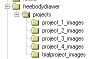
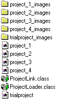
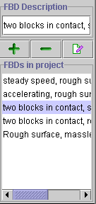
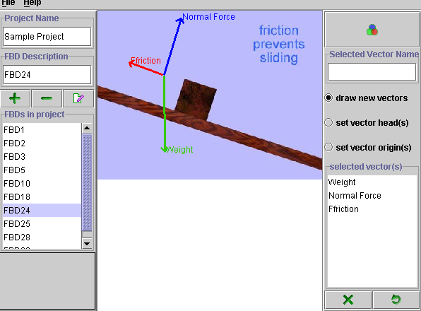

| Click this to open the following file menu: | ||
|  | New Project: Use this to begin creating a new Free Body Diagram Project | |
| Open Project: Click on this to open an existing project (see note below on the file structure used by the applet) | ||
| Import Project: You can combine projects by importing an existing project into the one you are currently working on | ||
| New FBD: This allows you to load an image file for which you will create a new FBD. Note that only GIF and JPG formats are supported. | ||
| Save Project: When you have finished creating or modifying a project save it by pressing this button. DO NOT give your file name an extension - the applet manages this. | ||
| Close Project: Closes the current project without saving anything. | ||
|  |
It is essential that all FBD files be contained in a common folder (called projects in this example). Each project is a combination of a project file (created by the editor when you save the project) and an image file. It is important that the image file have a specific name of the format:
|
|  |
Notice, for example that project_1 is accompanied by the folder project_1_images. You can assign any valid name you wish to the project file but you must also store all images for that project in an appropriately named folder. For Example...You have created a project called FBD1. All of the images that you use for this project must be in a folder called FBD1_images and this folder must be on the same level as the project file FBD1. |

| Add FBD: press this button to add an image from an image source. Remember, the image must be contained in a folder that is named according to the convention discussed in the previous section. | |
| Remove FBD: This removes the image from the project. It does not, however, delete the image from the image folder. | |
| Edit FBD: this button is not fully implemented in this version. To edit an existing FBD you need only load that FBD. It will become the active FBD in the drawing area on the right of the FBD Editing Panel. |
|  | A brief description of the FBD can be typed in the text box under "FBD Description". This description appears in the text area under "FBDs in project" and also appears when the user accesses these FBD's when using the applet Free Body Drawer. The descriptions should be short - preferably one or two lines at most. You can view the entire line of text by using the scrollbar at the bottom of the panel. |

|
 |
This panel presents you
with 3 options. All of these are things that you can do to the vectors that
you have drawn.
| Selected vector name provides you with a text box in which you can type the name of the vector (rather than the default labels of vector 1, vector 2, etc.). | |
| This is the "default" selection. When you first run the applet, anytime you click and drag the mouse in the drawing panel, a vector is created. You can point the vector in any direction and change its length at will. As soon as you release the mouse the vector becomes fixed in both length and direction. If you wish to modify this vector then you must select one of the two remaining options listed below. | |
|
|
Set vector head(s) allows you to rotate the vector to a new direction without changing its length. |
|
|
Set vector origin(s) allows you to move the vector to a new position without changing its direction. |
 |
The list of vectors that you have made and the names that you have given them appear in this area. You can change the name of a vector at any time by clicking on the vector in this box and then typing a new name in the Selected Vector Name text box above. |

| Press the color icon to change the color of the active vector (In the previous section, for example, "weight" appears highlighted so it would be the active vector.) By using the color editor you can change the vector "weight" to any color you wish. |